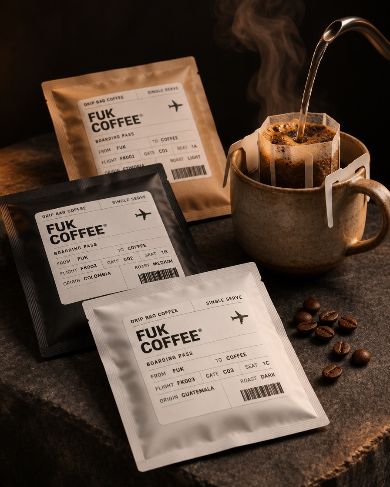
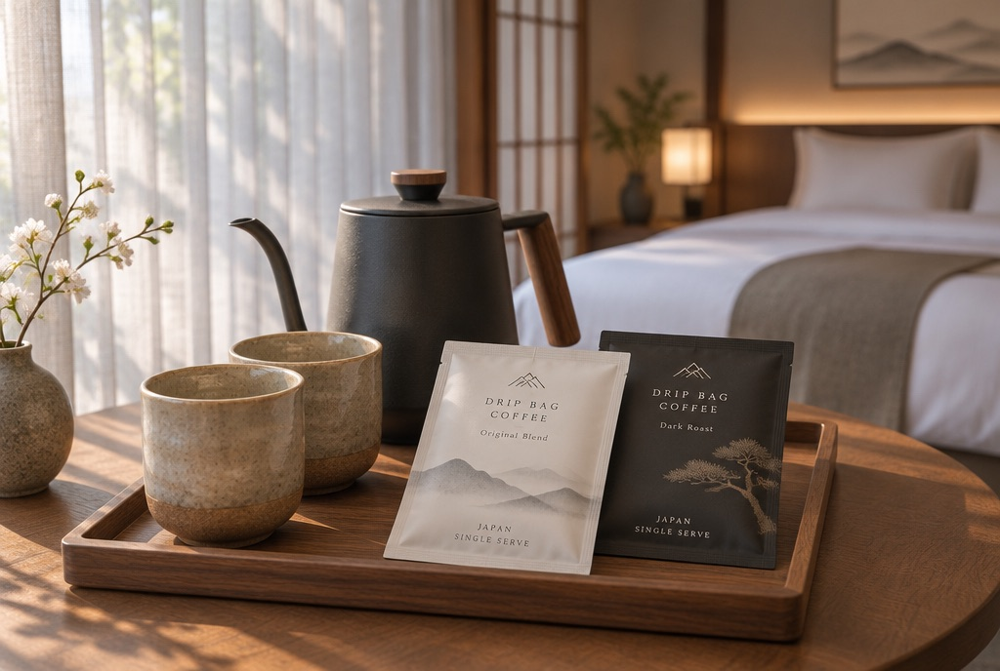
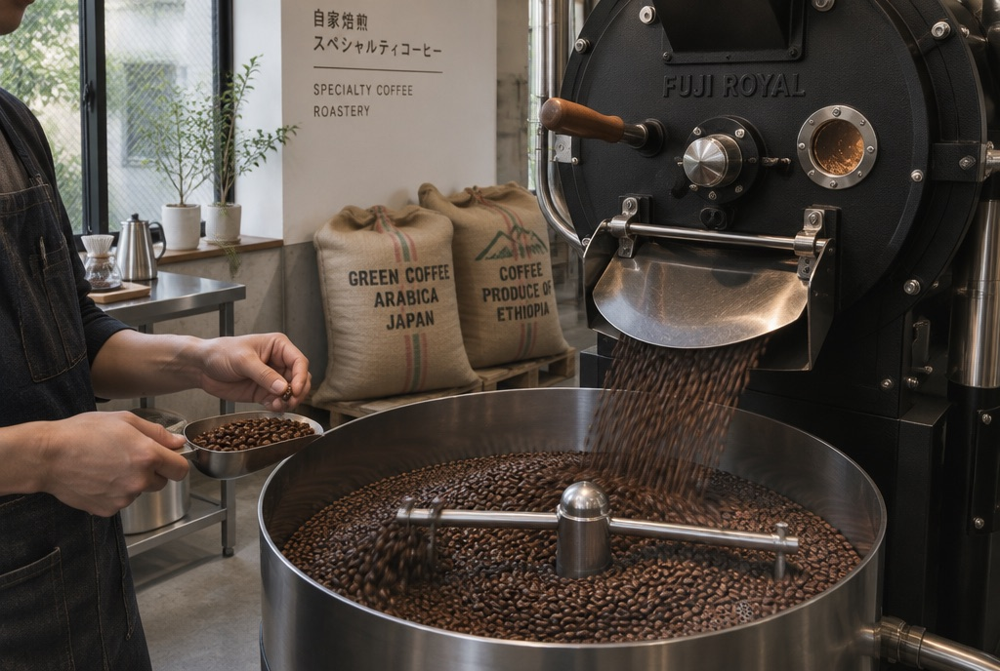

DRIP BAG OEM ｜ FUK COFFEE ROASTERY
Your brand,
ready for take off.
あなたの店のコーヒーを、
ドリップバッグに。
福岡の自家焙煎所 FUK COFFEE ROASTERY が、焙煎から充填・包装までを引き受けます。コーヒーショップの物販に、ホテルの客室に、企業のノベルティに。100袋から、全国へ。
- MIN. LOT
- 100袋から
- UNIT PRICE
- ¥82/袋〜
- DELIVERY
- 全国発送

For whom
店の味を持ち帰ってもらいたい方へ。
客室やオフィスの一杯を、上質にしたい方へ。
- CAF
コーヒーショップ・ロースター
自店の焙煎豆を持ち込んで、ドリップバッグ化。物販とギフトの新しい柱に。
- HTL
ホテル・旅館
客室のウェルカムコーヒーを、館名入りのオリジナルに。お土産としても。
- OFC
企業・オフィス
ノベルティ、来客用、周年記念に。ロゴ入りで、手に取ってもらえる一袋を。
- EVT
ブライダル・イベント
プチギフトや引き菓子の代わりに。名前や日付を入れた少量生産も。


Choose 3 things
決めるのは、豆・形・ロットの3つだけ。
あとは私たちが仕上げます。
Beans
豆を選ぶ
Package
形を選ぶ
Lot
数を選ぶ
Price
料金は、最初からすべて見せます。
問い合わせる前に、だいたいの予算がわかります。
| LOT | UNIT PRICE | REMARKS |
|---|
数が増えるほど、
1袋あたりは安くなります。
左の表は「FUKのブレンド・10g・無地の袋」の場合の目安です。豆の持ち込み、ラベルシール、オリジナル印刷などを選ぶと金額が変わります。
納期の目安は、です。
自分の条件で計算する →※ 表示の金額・納期は仮の数値です。正式な見積は、フォーム送信後にご案内します。
Reasons
毎日お客様に出している味を、
そのまま袋に詰めます。

店で毎日淹れている、
現場の味。
福岡・長崎・大阪でコーヒーショップを運営。お客様の反応を毎日見ている焙煎所が、ドリップバッグの味を決めます。
焙煎から包装まで、
窓口はひとつ。
豆選び、焙煎、充填、包装、発送まで。何社にも連絡する必要はありません。同業のロースター様は、豆の持ち込みも歓迎です。
小さく始めて、
大きく育てられる。
まずは100袋でテスト販売。売れ行きを見てから、ロットを増やしたりオリジナル印刷に切り替えたりできます。
Flow
見積から納品まで、4つのステップ。
やりとりはメールとオンラインで完結します。
- STEP 01
Check-in
見積・ご相談
フォームで豆・形・ロットを選んで送信。内容を確認し、正式な見積をお送りします。
- STEP 02
Sample
試作・試飲
サンプルをお届けします。味と袋の仕上がりを、実物で確かめてください。
- STEP 03
Boarding
デザイン確定・製造
ラベルや袋のデザインを確定。ご入金の確認後、製造に入ります。
- STEP 04
Take off
納品
全国へ発送します。追加のご注文は、前回の内容から簡単に。
Taste first
まずは、FUKのドリップバッグを一杯。
味に納得してから、ご相談ください。
FAQ
よくいただくご質問
自分の店で焙煎した豆を持ち込めますか？
はい、お受けしています。焙煎豆をお送りいただき、粉砕・充填・包装までを当社で行います。見積フォームで「自店の焙煎豆を持ち込む」をお選びください。
デザインのデータがなくても頼めますか？
ロゴや店名だけでも大丈夫です。ラベルの作り方からご相談に乗ります。まずは無地の袋で始めることもできます。
サンプルはもらえますか？
ご注文前に、味と仕上がりを確認できるサンプルをご用意します。FUKの味を先に知りたい方は、オンラインショップのドリップバッグをお試しください。
支払い方法は？
法人・店舗様は銀行振込（請求書払い）に対応します。詳細は見積のご案内時にお伝えします。
追加注文（リピート）はできますか？
できます。前回と同じ内容であれば、受付番号をお伝えいただくだけで手配します。
Now
boarding.
豆・形・ロットを選ぶだけ。1分で、概算の金額がわかります。